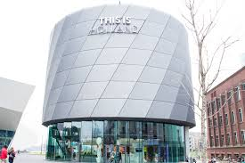

Venice of the North
Amsterdam is the Netherlands’ capital, known for its artistic heritage, elaborate canal system and narrow houses with gabled facades, legacies of the city’s 17th-century Golden Age. Its Museum District houses the Van Gogh Museum, works by Rembrandt and Vermeer at the Rijksmuseum, and modern art at the Stedelijk.
Three Main Attractions in Amsterdam
-
Amsterdam Dungeon
The Amsterdam Dungeon, in the city of Amsterdam, Netherlands, which is owned and operated by UK-based Merlin Entertainments and attempts to show history through an interactive adventure. Live actors, a ride, shows and special effects simulate historical dark and bleak times, it was first opened in September 2005.
-
Amsterdam Clog Shop
Clogs are a type of footwear that has a thick, rigid sole typically made of wood, although in American English, shoes with rigid soles made of other materials are also called clogs. Traditional clogs remain in use as protective footwear in agriculture and in some factories and mines.
-
Holland 5D Experience
In the 5D Flight Experience you will experience an unforgettable flying experience. It looks like you are actually flying. Just sit down and hold on tight!